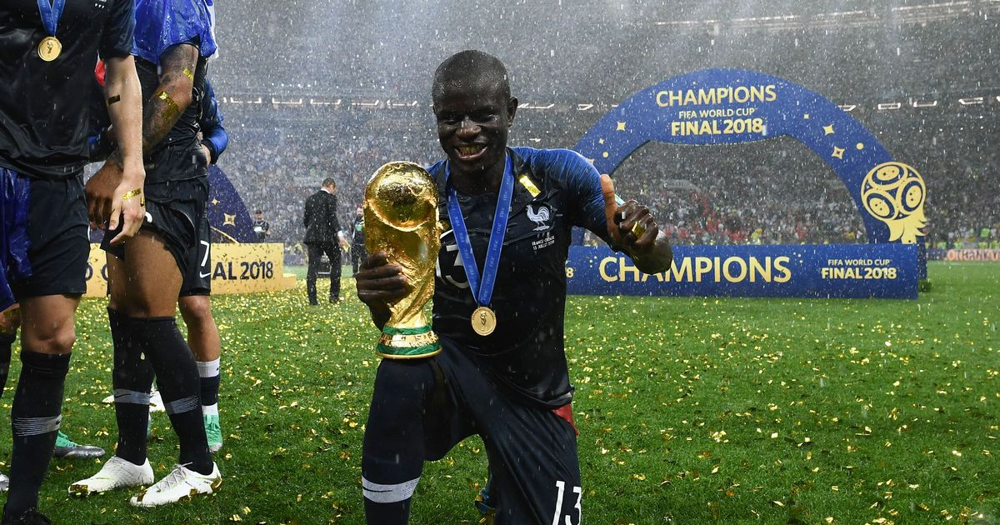

N'GOLO KANTE
N'GOLO KANTEก็องเต้ ย้ายมาจากเลสเตอร์ ซิตี้ ซึ่งเขามีบทบาทสำคัญช่วยให้ "จิ้งจอกสีน้ำเงิน" สร้างปาฏิหาริย์คว้าแชมป์พรีเมียร์ ลีกในซีซั่นก่อนหน้านั้น
ไฮไลต์ส่วนตัวหลายนัดของ ก็องเต้ เกิดขึ้นในรอบน็อคเอาต์ของฟุตบอลถ้วย เขาสวมปลอกแขนกัปตันในเกมเอฟเอ คัพ รอบ 5 ที่บุกเยือนบาร์นสลี่ย์ และลงเล่นนัดที่ 200 ให้เชลซีในเกมแชมเปี้ยนส์ ลีก ที่พวกเราบุกไปเอาชนะแอตเลติโก้ มาดริดช่วงปลายเดือนกุมภาพันธ์ สำหรับการแข่งขันนัดที่ 2 เขาโชว์การสปรินท์ในนาทีที่ 94 จากแดนของพวกเรา เพื่อช่วยดึงตัวประกบและสร้างพื้นที่ให้กับ เอแมร์ซอน ได้ยิงประตูปิดกล่อง
เขาได้รับรางวัลแมน ออฟ เดอะ แมตช์ ในเกมเหย้าที่พบกับปอร์โต้รอบถัดมา ก่อนจะโชว์ฟอร์มแจ่มแจ๋วที่เวมบลีย์ในรอบตัดเชือกเอฟเอ คัพ ซึ่งพวกเราเอาชนะแมนฯ ซิตี้ และยังได้รับรางวัลแมน ออฟ เดอะ แมตช์ในทั้ง 2 นัดที่พบกับเรอัล มาดริด ด้วยการรับมือยอดมิดฟิลด์อย่าง โทนี่ โครส, ลูก้า โมดริช และ คาเซมิโร่ อยู่หมัด จนพาทีมผ่านเข้าชิงชนะเลิศฟุตบอลยุโรปถ้วยใหญ่ได้อย่างน่าประทับใจ

ในการแข่งขันรอบชิงชนะเลิศที่ปอร์โต้ ก็องเต้ ดวลลูกกลางอากาศชนะคู่แข่งได้มากกว่านักเตะเชลซีทุกคน และแย่งบอลคืนกลับมาได้มากที่สุด เขาคอยทำลายการจ่ายบอลของแมนฯ ซิตี้ พร้อมช่วยให้ทีมได้เริ่มต้นการเล่นเกมสวนกลับ ถือเป็นอีกหนึ่งปีที่วิเศษในเสื้อสีน้ำเงินของ เอ็นโกโล่ โดยตอนนี้เขาลงสนามน้อยกว่า เซซาร์ อัซปิลิเกวต้า เพียงคนเดียวในทีมเชลซี
เขาได้รับเลือกให้ติดทีมชาติในเดือนมีนาคม 2016 สร้างความประทับใจในเกมนัดเปิดสนามรายการยูโร 2016 ที่เจอกับโรมาเนียเขาช่วยจ่ายบอลให้ดมิทรี่ ปาเย็ตยิงประตูชัยได้ในช่วงท้ายเกมด้วย
ในการแข่งขันฟุตบอลโลก 2018 ที่ประเทศรัสเซีย ก็องเต้ได้ถูกเรียกตัวและความฝันก็กลายเป็นจริงเมื่อทีมของ ดิดิเย่ร์ เดช็องป์ส คว้าแชมป์ได้สำเร็จ ด้วยการเอาชนะโครเอเชีย 4-2 ในรอบชิงชนะเลิศ ก็องเต้ได้ลงสนามอย่างสม่ำเสมอตลอดทัวร์นาเม้นต์ และเป็นตัวจริงในรอบชิงชนะเลิศ คว้าเหรียญแชมป์เวิลด์ คัพ มาห้อยคอได้สำเร็จ
3 ปีถัดมาในการแข่งขันยูโร 2020 ที่ถูกเลื่อน ก็องเต้ เป็นแกนสำคัญในแผนของ เดช็องป์ส อีกครั้ง และเขาได้ลงเล่นทุกนาทีให้กับฝรั่งเศส ที่ผ่านเข้าไปถึงรอบ 16 ทีมสุดท้าย ก่อนพ่ายให้กับสวิตเซอร์แลนด์ด้วยการดวลจุดโทษ
SOCIAL MEDIA
 |
|